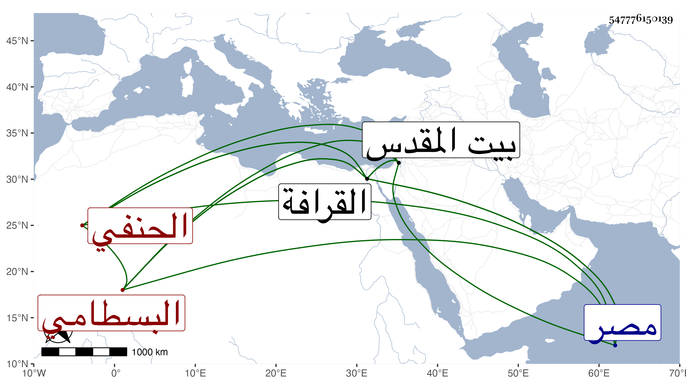

0902Sakhawi.DawLamic.ITO20230111-ara1.EIS1600.547776150139
Biography ID: 547776150139
332
عمر بن علي بن حجي البسطامي الحنفي . أصله من العجم وصحب بعض الفقراء ودخل القدس ولازم عبد الله البسطامي فعرف به وأخذ عن محمد القرمي ثم قدم مصر فقطنها وسكن قريب اللؤلؤة بالعارض بسفح المقطم من القرافة أكثر من ستين سنة ، وكان ساكنا خيرا معتقدا بين الناس حتى قل أن ترد له رسالة ذا مدد من عقار ملكا وإجارة ملازما للصلاة والذكر حتى بعد إقعاده . مات في يوم عيد الأضحى سنة سبع وثلاثين وأرخه شيخنا في حادي عشر ذي الحجة كأنه بالنظر ليوم دفنه ودفن من منزله بالقرافة وقد قارب التسعين . قال شيخنا في إنبائه : وسمعت بعض الناس يذكر أنه جاز المائة وليس كما ظن انتهى . بل قرأت بخط بعضهم أنه كان يذكر أنه زاد على المائة وعشرين ، وأعاده شيخنا في السنة التي بعدها وقال : كان كثير الذكر مستمرا عليه لا يفتر عنه لسانه وتحكى عنه كرامات وللناس فيه اعتقاد رحمه الله وإيانا . قلت : وممن أخذ عنه الشريف المناوي وخادمه الشهاب البوتيجي وقال لي أنه أعطى كل واحد منهما سبحة جميز .
